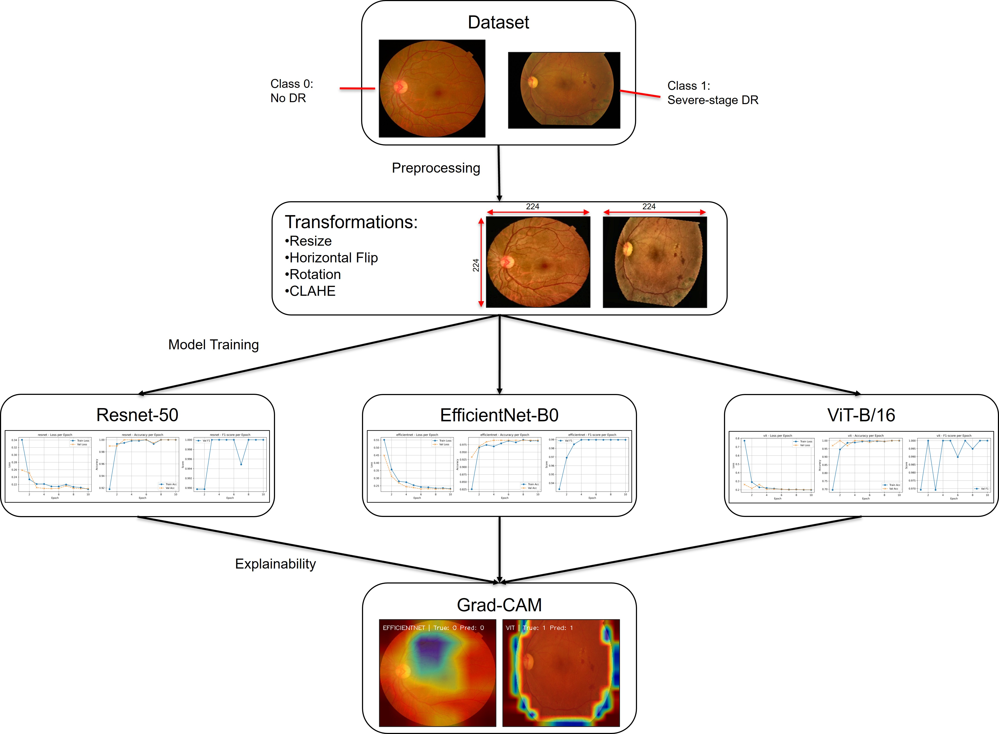

Diabetic Retinopathy Detection
AI-Powered Screening using Deep Learning & Explainable AI
Introduction
Diabetic Retinopathy (DR) is a progressive eye condition and a leading cause of blindness among adults globally. Early detection is critical for effective treatment; however, the manual diagnostic process requires highly trained ophthalmologists to examine retinal fundus images for minute signs like microaneurysms and hemorrhages. This manual process is time-consuming, expensive, and prone to human error, creating a bottleneck in healthcare delivery.
Our project addresses this challenge by developing an automated, AI-driven screening system. We leverage advanced Deep Learning architectures to classify retinal images into "Referable" (Severe) and "Non-Referable" (Normal/Mild) cases. By integrating Explainable AI (XAI), we go beyond simple prediction, providing clinicians with visual evidence of the model's decision-making process, thereby bridging the gap between "black box" AI and clinical trust.
Methodology
We implemented a rigorous end-to-end pipeline designed for medical imaging reliability:
-
1. Data Curation & Balancing:
The raw dataset contained severe class imbalances. We curated a specialized binary dataset by mapping multi-class labels (0-4) to a binary schema (Normal vs. Severe). To prevent model bias, we utilized undersampling techniques to create a perfectly balanced dataset, ensuring the model learns to identify pathologies rather than just predicting the majority class.
-
2. Advanced Preprocessing:
Retinal images often suffer from poor lighting and low contrast. We implemented a preprocessing pipeline that includes standardizing image size to 224x224 pixels and applying CLAHE (Contrast Limited Adaptive Histogram Equalization). This technique locally enhances contrast, making subtle features like blood vessels and lesions significantly more distinct for the neural networks.
-
3. Parallel Model Architectures:
We trained and evaluated three distinct state-of-the-art architectures to determine the optimal solution:
- ResNet-50: A deep Convolutional Neural Network (CNN) utilizing residual connections to capture complex feature hierarchies.
- EfficientNet-B0: A highly efficient CNN that scales depth, width, and resolution uniformly, offering high accuracy with lower computational cost.
- Vision Transformer (ViT-B/16): A non-convolutional architecture that treats image patches as sequences, allowing for global context understanding via self-attention mechanisms.
-
4. Explainability & Deployment:
To ensure transparency, we integrated Grad-CAM (Gradient-weighted Class Activation Mapping). This technique generates heatmaps overlaying the original image, highlighting the specific pixels (e.g., hemorrhages) that influenced the model's prediction. The final system was deployed as a responsive Flask web application on Hugging Face Spaces for real-time accessibility.

Figure 1: Complete pipeline illustrating the flow from data ingestion and preprocessing to model training and Grad-CAM visualization.
Results & Conclusion
Our comprehensive evaluation demonstrated that deep learning models can effectively screen for severe Diabetic Retinopathy. EfficientNet-B0 emerged as the most balanced model, delivering high accuracy and F1-scores suitable for clinical screening. Crucially, the Grad-CAM visualizations confirmed that our models were learning clinically relevant features—correctly focusing on lesions rather than background noise. This project validates the potential of AI to serve as a reliable, transparent second opinion for ophthalmologists.